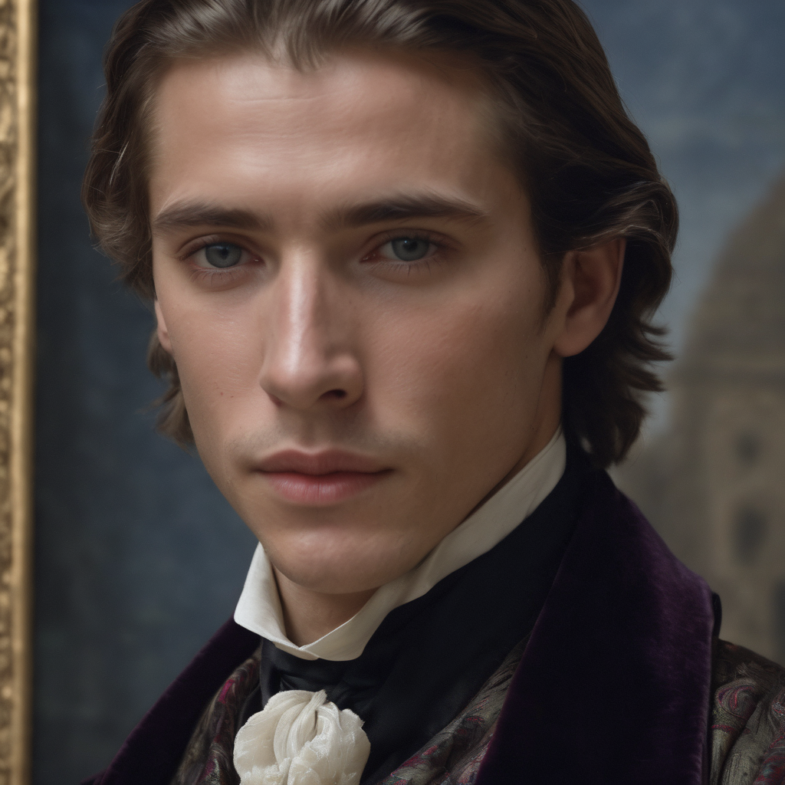
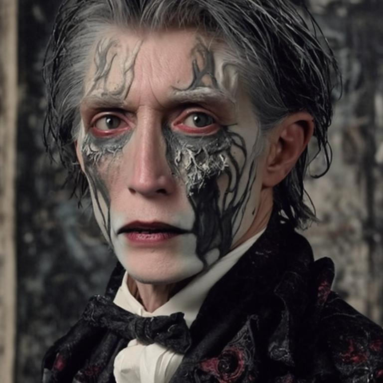

Book timeline
Press the text below to see animation
-
1. Basil Hallward paints a portrait of Dorian Gray. Dorian is introduced to Lord Henry Wotton
-
2. Dorian wishes for eternal youth; to sell his soul and have the painting age instead of him
-
3. Dorian meets Sybil Vane, falls in love, asks her to marry him
-
4. Dorian takes Basil and Harry (Lord Henry) to meet Sybil
-
5. Sybil acts terribly; Dorian is disappointed and calls off their marriage
-
6. Sybil commits suicide. (look at the MAP)
-
7. Dorian learns that his wish has come true; the painting gains a sneer
-
8. Basil confesses his admiration for Dorian
-
9. Dorian becomes influenced by a book that was given to him from Harry and lives his life according to the novel
-
10. 18 years later, Basil confronts Dorian about his sinful life choices
-
11. Dorian shows Basil the painting and blames him for his very acts; Dorian kills Basil
-
12. Dorian is approached by Sybil's brother, James, with the intention of killing Dorian; Dorian talks James out of it by telling him that he is too young to have known Sybil
-
13. James is accidentally shot by a hunter. (look at the MAP)
-
14. Dorian decides to be "good" from then on, however, it does not reverse his original wish, but makes the portrait even uglier
-
15. Dorian stabs the painting and in return kills himself
-
16. The painting returns to its original, beautiful state


